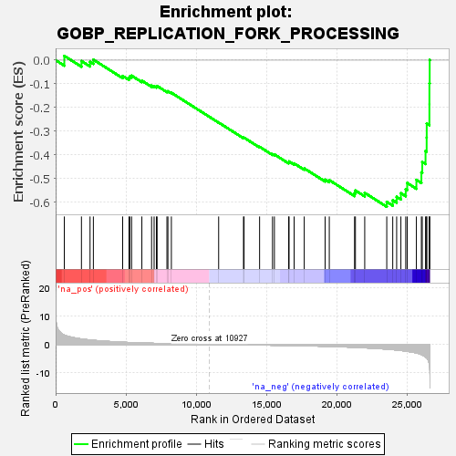
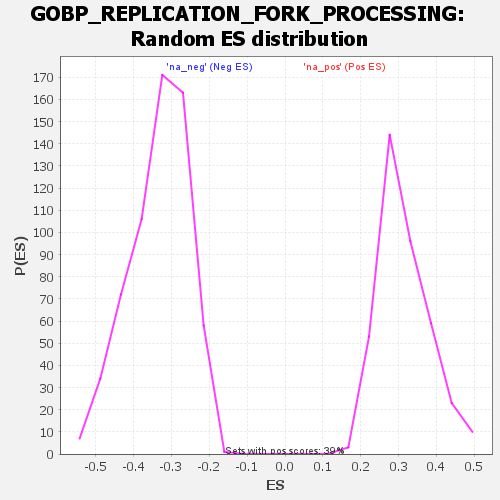

| | | Dataset | wbh_treatment_res_for_gsea |
| Phenotype | NoPhenotypeAvailable |
| Upregulated in class | na_neg |
| GeneSet | GOBP_REPLICATION_FORK_PROCESSING |
| Enrichment Score (ES) | -0.6195337 |
| Normalized Enrichment Score (NES) | -1.8645312 |
| Nominal p-value | 0.0 |
| FDR q-value | 0.14663455 |
| FWER p-Value | 0.384 |
Table: GSEA Results Summary

Fig 1: Enrichment plot: GOBP_REPLICATION_FORK_PROCESSING
Profile of the Running ES Score & Positions of GeneSet Members on the Rank Ordered List
| SYMBOL | RANK IN GENE LIST | RANK METRIC SCORE | RUNNING ES | CORE ENRICHMENT | | 1 | PARP1 | 617 | 3.322 | 0.0181 | No |
| 2 | SMARCAL1 | 1834 | 1.930 | -0.0037 | No |
| 3 | FBH1 | 2445 | 1.575 | -0.0071 | No |
| 4 | CENPX | 2681 | 1.456 | 0.0021 | No |
| 5 | DDX11 | 4762 | 0.775 | -0.0666 | No |
| 6 | EXD2 | 5211 | 0.680 | -0.0750 | No |
| 7 | SAMHD1 | 5269 | 0.671 | -0.0688 | No |
| 8 | MUS81 | 5397 | 0.643 | -0.0656 | No |
| 9 | ZNF365 | 6126 | 0.509 | -0.0867 | No |
| 10 | RTEL1 | 6817 | 0.402 | -0.1077 | No |
| 11 | RFWD3 | 6997 | 0.377 | -0.1097 | No |
| 12 | CENPS | 7161 | 0.355 | -0.1115 | No |
| 13 | CDK9 | 7208 | 0.346 | -0.1089 | No |
| 14 | ALYREF | 7908 | 0.263 | -0.1319 | No |
| 15 | BOD1L1 | 7978 | 0.254 | -0.1314 | No |
| 16 | ATRX | 8223 | 0.227 | -0.1378 | No |
| 17 | EME2 | 11582 | -0.049 | -0.2636 | No |
| 18 | EME1 | 13347 | -0.159 | -0.3281 | No |
| 19 | OOEP | 13388 | -0.162 | -0.3276 | No |
| 20 | PCNA | 14491 | -0.231 | -0.3662 | No |
| 21 | KHDC3L | 15407 | -0.294 | -0.3970 | No |
| 22 | ZRANB3 | 15542 | -0.303 | -0.3983 | No |
| 23 | SETMAR | 16553 | -0.381 | -0.4316 | No |
| 24 | TONSL | 16585 | -0.384 | -0.4280 | No |
| 25 | ATR | 16944 | -0.416 | -0.4363 | No |
| 26 | FAM111A | 17662 | -0.490 | -0.4572 | No |
| 27 | TRAIP | 19145 | -0.675 | -0.5046 | No |
| 28 | RAD51 | 19442 | -0.719 | -0.5068 | No |
| 29 | CARM1 | 21236 | -1.037 | -0.5615 | No |
| 30 | THOC1 | 21299 | -1.052 | -0.5507 | No |
| 31 | NBN | 21960 | -1.205 | -0.5606 | No |
| 32 | RAD50 | 23525 | -1.669 | -0.5988 | Yes |
| 33 | DNA2 | 23950 | -1.850 | -0.5918 | Yes |
| 34 | GEN1 | 24228 | -1.989 | -0.5775 | Yes |
| 35 | BRCA1 | 24529 | -2.158 | -0.5619 | Yes |
| 36 | MRE11 | 24872 | -2.370 | -0.5454 | Yes |
| 37 | ETAA1 | 24977 | -2.448 | -0.5188 | Yes |
| 38 | BARD1 | 25629 | -3.031 | -0.5057 | Yes |
| 39 | WRN | 25985 | -3.588 | -0.4744 | Yes |
| 40 | RBBP8 | 26047 | -3.738 | -0.4303 | Yes |
| 41 | BRCA2 | 26280 | -4.475 | -0.3834 | Yes |
| 42 | FANCM | 26359 | -4.774 | -0.3270 | Yes |
| 43 | BLM | 26364 | -4.785 | -0.2676 | Yes |
| 44 | PRIMPOL | 26554 | -7.097 | -0.1865 | Yes |
| 45 | MMS22L | 26555 | -7.131 | -0.0978 | Yes |
| 46 | NUCKS1 | 26575 | -7.991 | 0.0008 | Yes |
Table: GSEA details [plain text format]

Fig 2: GOBP_REPLICATION_FORK_PROCESSING: Random ES distribution
Gene set null distribution of ES for GOBP_REPLICATION_FORK_PROCESSING